Product Portfolio
Product manager with experience in hardware-software integration, AI/ML products, and data-driven decision making. Skilled at scoping MVPs, prioritizing features based on ROI, and translating technical complexity into user value.
TL;DR: I take ambitious problems and ship working solutions. Track record: 88.75% ML accuracy, 40% productivity boost, 1 autonomous system delivered.
💡 Tip: Click on any project card below to view detailed case studies.
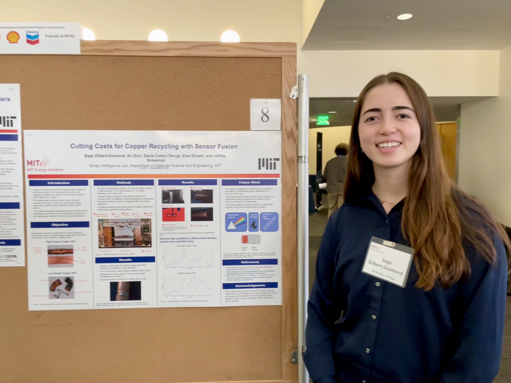
From Scrap to Profit
AI-Powered Copper Scrap Sorting
Hard truth: Recycling only works if it's profitable. Manual sorting kills margins.
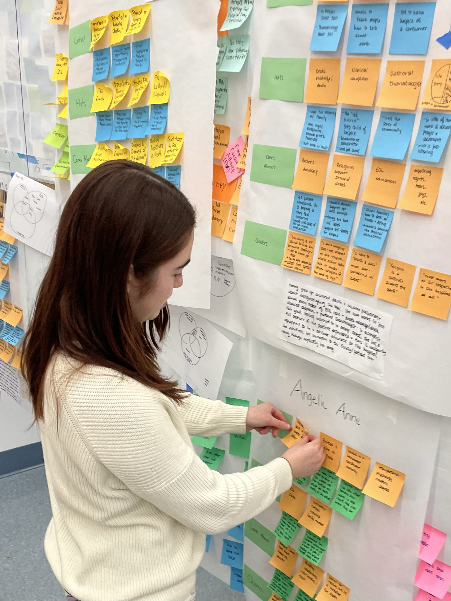
Worked to Death
Innovative End-of-Life Care
Death doulas care for the dying but are worked to death themselves. We found a solution.
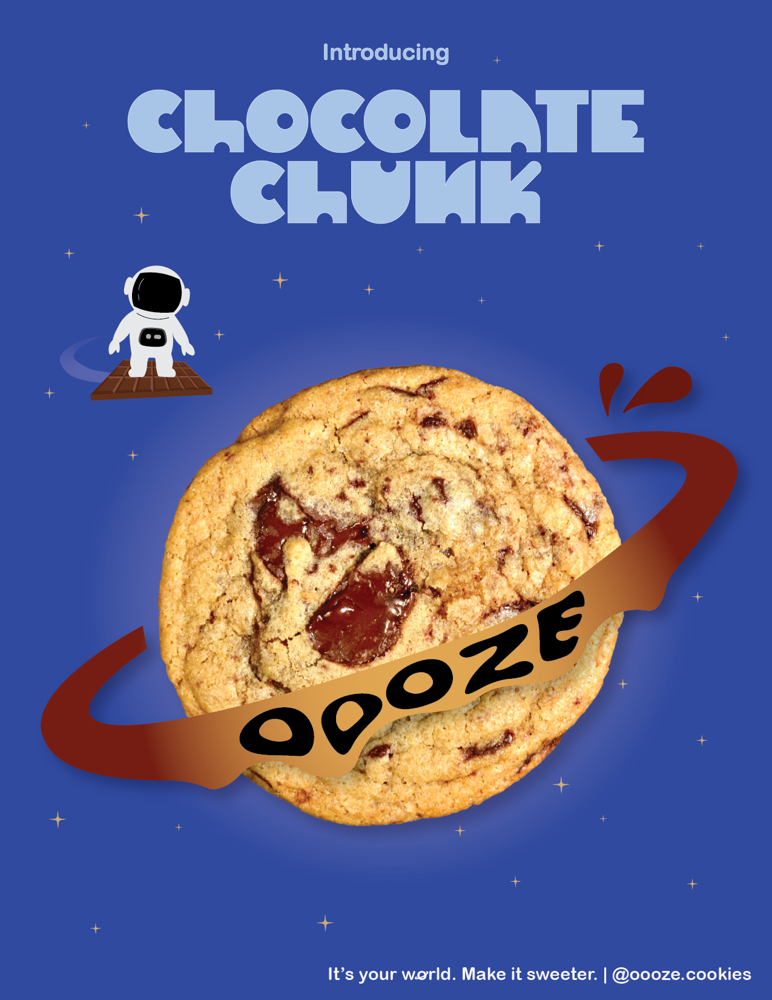
Oooze Cookies
Campus Food Startup
Turning a favorite home recipe into a campus startup through rapid iteration and real customer feedback.
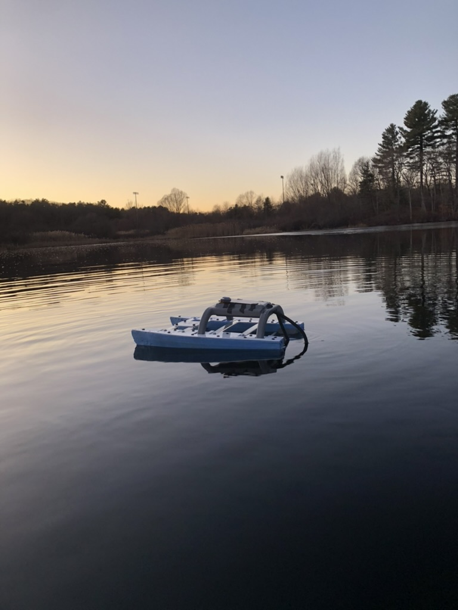
No Compass? No Problem.
Autonomous Surface Vehicle
No compass meant rethinking navigation from scratch.
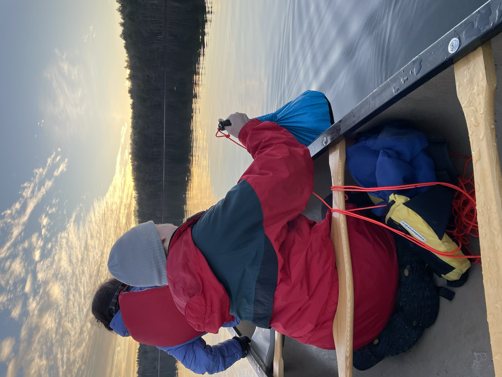
The Goldilocks Box
Underwater Muon Detection System
Making our muon detection apparatus heavy enough to sink but light enough to retrieve.
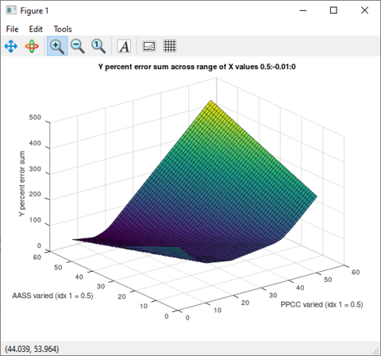
Startup Summer
Medical Device R&D Internship
Wearing all the hats: delivering science and a story to make the tech investable.
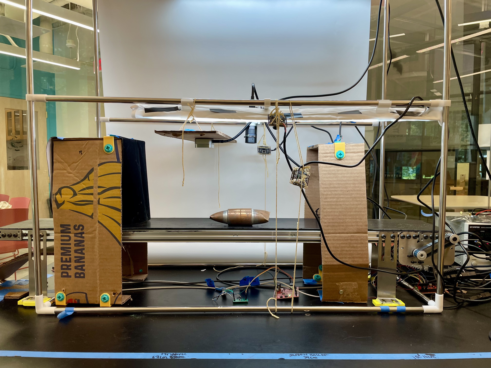
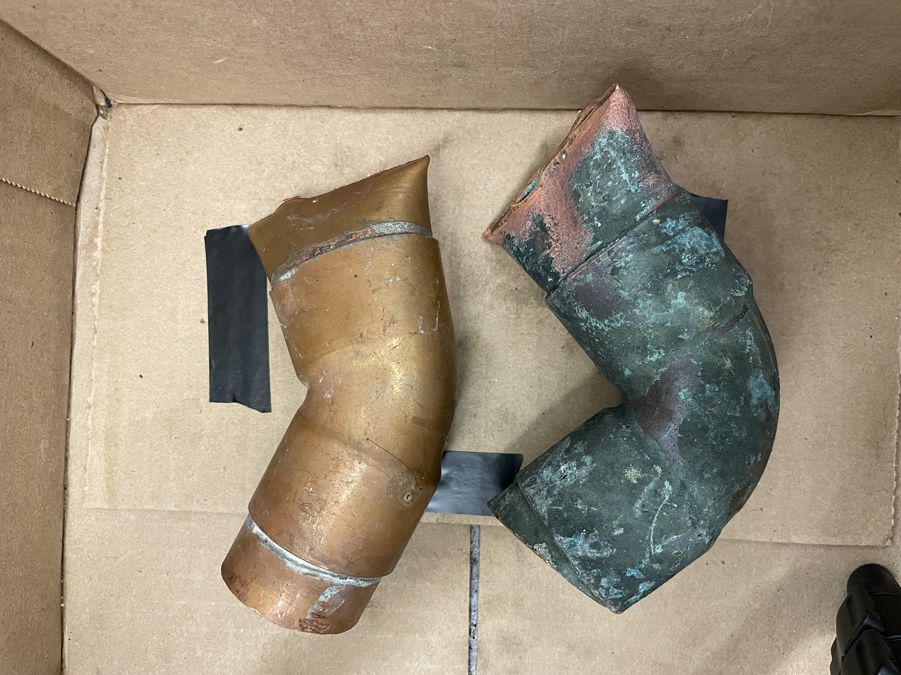
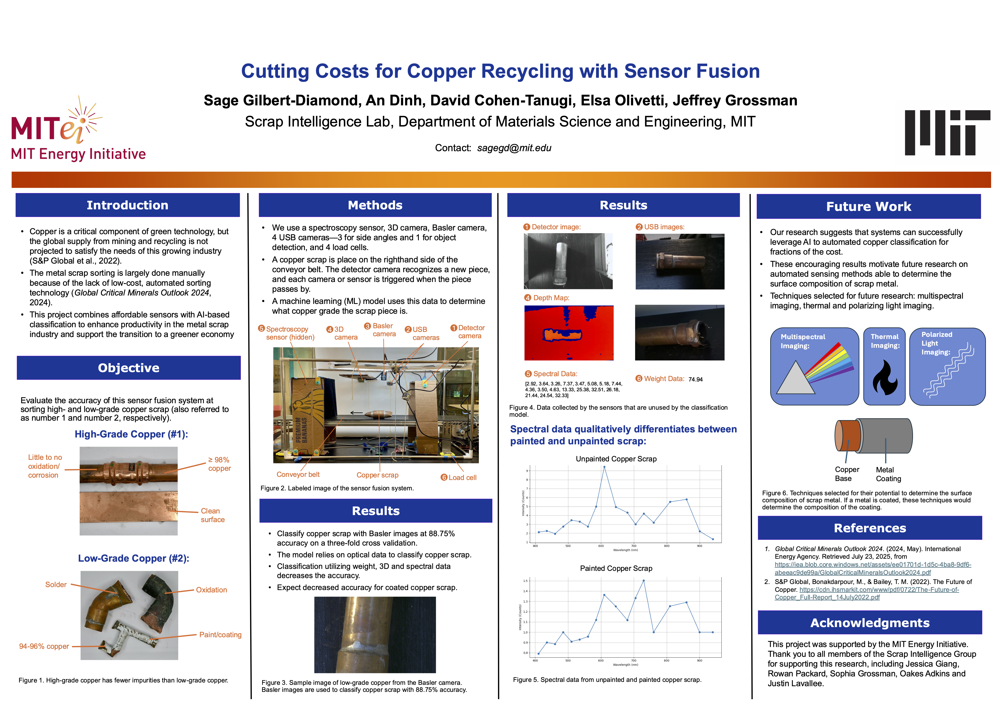
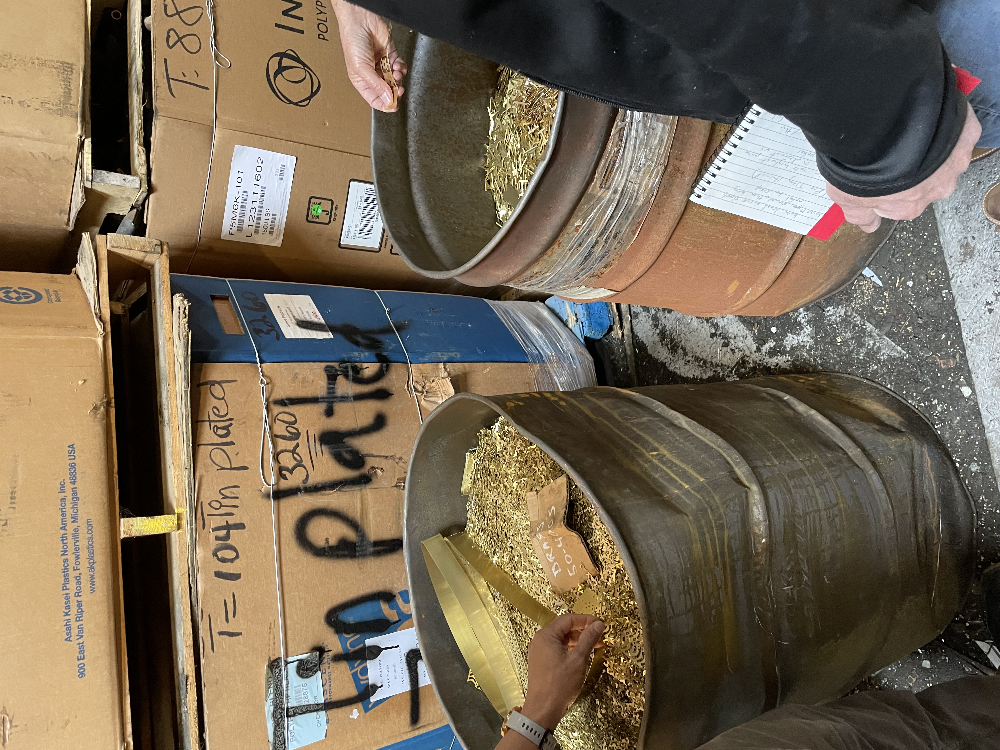
From Scrap to Profit
AI-Powered Copper Scrap Sorting
Built AI-powered sensor system targeting 30% cost reduction. Delivered 88.75% accuracy through scrap yard visits, ROI analysis, and relentless iteration.
Opportunity
- Problem: Manual copper sorting reduces profit with high operational costs and inconsistent quality
- Hypothesis: Automated sensor fusion + AI can reduce labor dependency while improving accuracy
- Success metric: 88.75% classification accuracy on high-grade copper
User Research
- Recyclers: Need faster throughput, reduced labor costs, higher grade separation accuracy
- Conducted scrap yard site visit to understand operational constraints and pain points
Product Requirements
- Sensor stack: Spectroscopy, 3D depth camera, weight sensors, multiple visual cameras, object detection
- System integration: Automated conveyor triggering sensors at detection points
- ML pipeline: Multi-modal model trained on spectral, weight, geometry, and visual features
- Performance: 88.75% accuracy on three-fold cross-validation for high-grade copper
Data-Driven Decisions
- ROI analysis: Identified optical imaging as highest-value sensor for MVP
- Error analysis: Paint/coatings identified as primary failure mode
- Recommendation: Add thermal, multispectral, and polarized imaging in V2 to address errors
Business Impact
- Demonstrated potential to reduce sorting labor costs and increase scrap recovery
- Validated product-market fit through industrial partner collaboration
- Presented findings at MIT Energy Initiative Annual Research Conference
Demonstrated PM Skills
- Scoped cost-effective MVP
- Created product roadmap informed by failure mode analysis and market needs
- Communicated technical tradeoffs to engineers and lab leadership
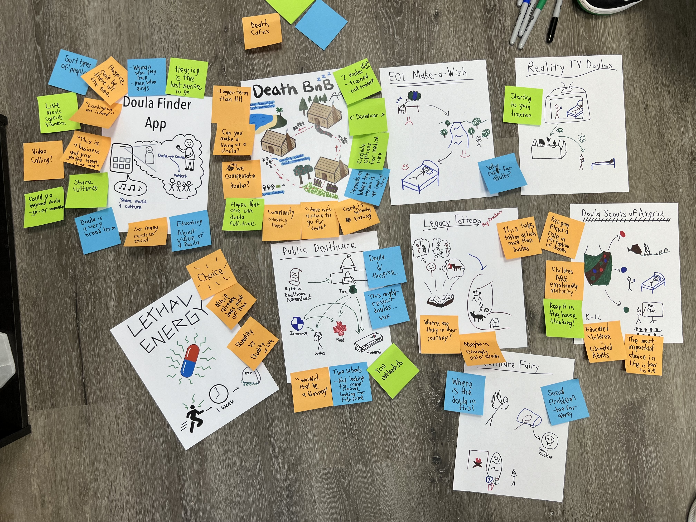
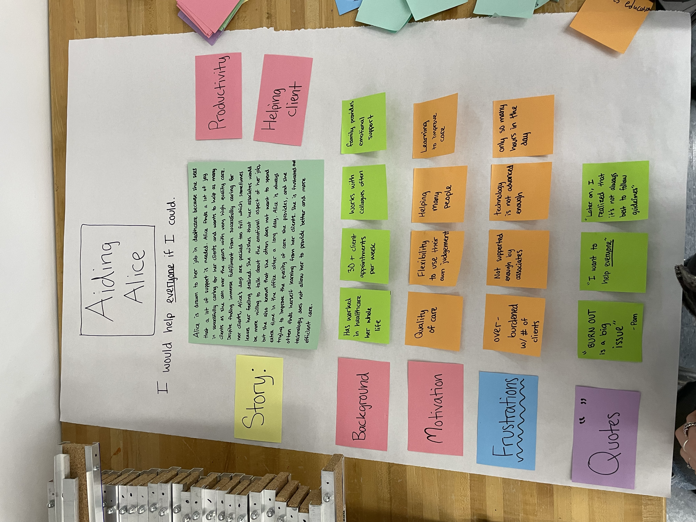
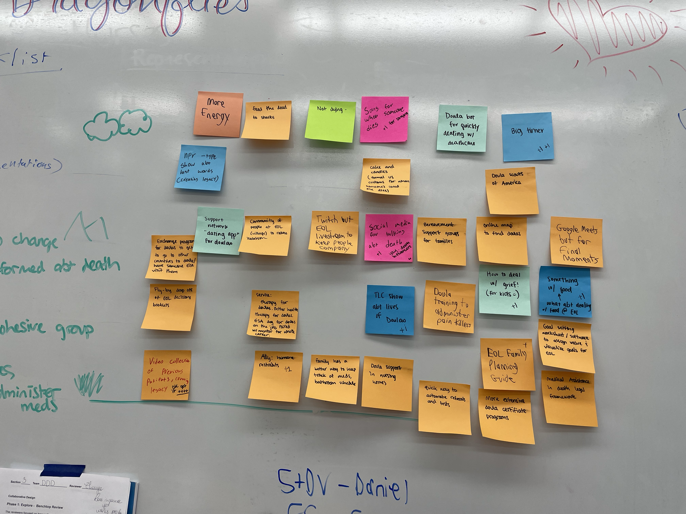
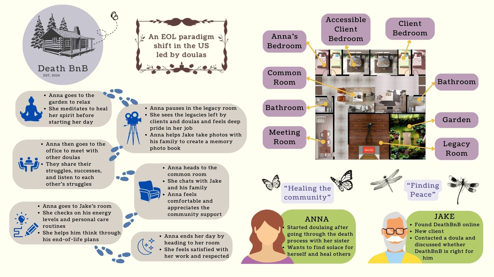
Worked to Death
Innovative End-of-Life Care
Spent 3 months in research. 10+ interviews revealed burnout, family conflict, and systemic isolation. Co-designed Death BnB: nonprofit lodges bringing community back to American death culture.
Problem & Opportunity
- Problem: US death culture lacks community support systems present in global deathcare traditions
- User pain point: Doulas experience burnout from emotional burden and family conflict management
- Market gap: No community-focused alternative to medicalized hospice model
- Opportunity to "de-corporatize" end-of-life care
User Research
- Conducted 10 stakeholder interactions with team: 4 in-person, 6 remote interviews
- Research methods: Co-designs, semi-structured interviews, observational shadowing
- Created 10 individual people portraits with quotes, photos, personality analysis
Data Synthesis
- Synthesized research into 3 distinct personas representing user motivations:
- Aiding Alice: High-volume healthcare worker motivated by helping many people, struggles with burnout and lack of peer support
- Visionary Vanessa: Focused on systemic change in US death culture, politically engaged, values community-oriented care models
- Mending Mary: Personal loss survivor using doulaing to heal, runs support groups, destigmatizes death for broader community
- Mapped personas on 2x2 frameworks: spiritual-political vs. frustrated-content showed strong segmentation
Key Insights
- Insight 1: Doulas venerate global deathcare traditions that provide community at EOL
- Insight 2: Most doula stress comes from family conflict, not the dying client
Ideation & Co-Design Process
- Generated 100+ ideas plotted on "fanciful horizon" boldness framework and conducted 5 co-design sessions
- Key learning: Boldness comes from cultural shifts, not radical technology
- Validated assumptions, iterated, and refined ideas to 3 final concepts
Solution: Death BnB Value Proposition
- What it is: Nonprofit network of lodges providing community-centered end-of-life care
- Different from hospice: Focuses on quality of life and community vs. medical care and life extension
- For doulas: Creates professional network for experience-sharing and reduces isolation
- For clients: Scenic locations with peers, meaningful activities, and holistic support
- For families: Reduces trauma of home death by providing community support
- Funding model: 501(c)(3) via donations and service charges
Product Management Skills Demonstrated
- User research
- Persona development
- Iterative design
- Stakeholder management
- Service design
Impact
- Validated concept addressing critical gap in US healthcare system
- Designed solution serving all three personas with distinct value props:
- Created compelling vision of transformed death culture in US
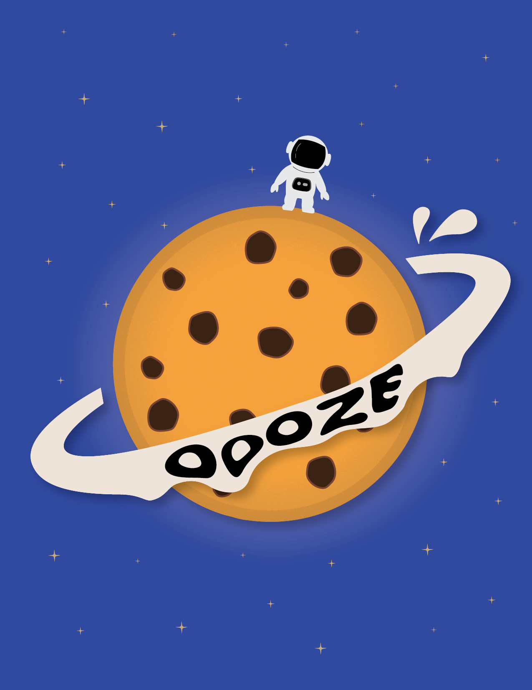
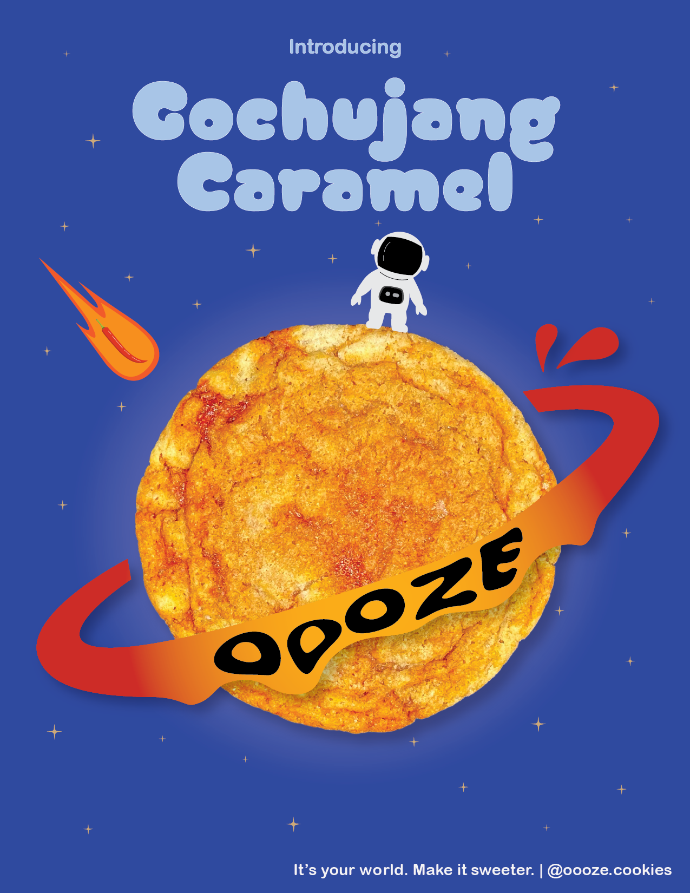
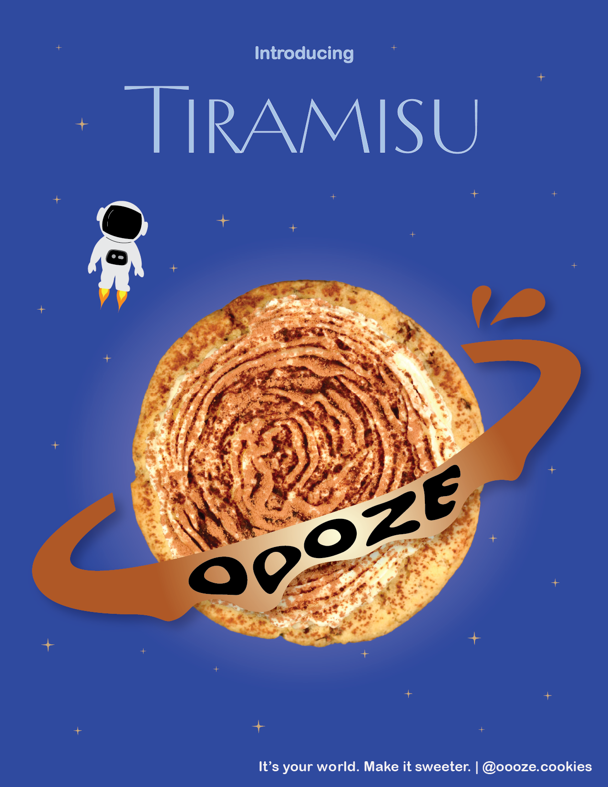
Oooze Cookies
Campus Food Startup
Set to launch in Spring 2026 at Wellesley. Conducted end-to-end product development from recipe iteration and brand identity testing to operational planning. Applied lean startup methodology: testing assumptions through real customer feedback before investing in full production.
Market Opportunity
- Market opportunity: Wellesley students have limited late-night options for convenient, high-quality snacks
- Customer discovery: Conducted anonymous survey of Wellesley students gathering data on: pricing preferences, pickup method, flavor profiles, and purchase frequency
- Differentiation: Creative flavor profiles (Gochujang Caramel, Tiramisu, Chocolate Chunk) with strong visual brand identity
- Success metrics: Positive survey feedback on pricing, flavors, and delivery model; validated demand through pre-orders
Product Development
- Recipe experimentation: Tested multiple variations of each flavor to optimize taste, texture and uniqueness
- Feedback loop: Used holiday gathering as live product testing—fastest disappearing cookies = strongest product-market fit
- Size optimization: Researching cookie dimensions that balance customer appeal with profit margins and production efficiency
Brand Identity
- User testing: Gathered first impressions on poster designs to identify which elements resonated and what needed refinement
- Brand positioning: "It's your world. Make it sweeter" tagline emphasizing personalization and joy
- Social proof strategy: Planning @oooze.cookies Instagram presence for pre-launch buzz and customer engagement
Operations Planning
- Regulatory research: Investigated food preparation safety guidelines and requirements for operating from home kitchen
- Supply chain: Planning ingredient purchasing schedule to maintain freshness while minimizing waste
- Production timeline: Mapping out when to prepare dough, bake batches, and coordinate pickup windows with customer availability and my academic workload
Business Model
- Cost analysis: Calculating ingredient costs, labor time, and overhead to establish baseline pricing
- Competitive research: Analyzing pricing of other campus food options and local bakeries
- Profit margin optimization: Balancing cookie size, ingredient quality, and pricing to ensure sustainable business model
Product Management Skills Demonstrated
- Data-driven iteration
- Operations planning
- Brand development
- Market research
- Risk mitigation
Future Roadmap
- Post content on Instagram account to build interest
- Conduct soft launch with small batch to validate production process and gather initial customer feedback
- Iterate on pricing, flavors, and scale of operations based on first-week data
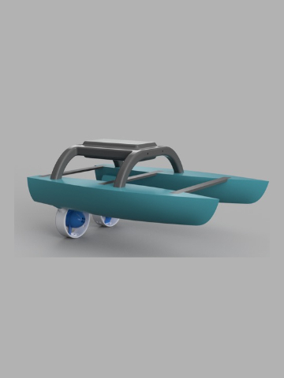
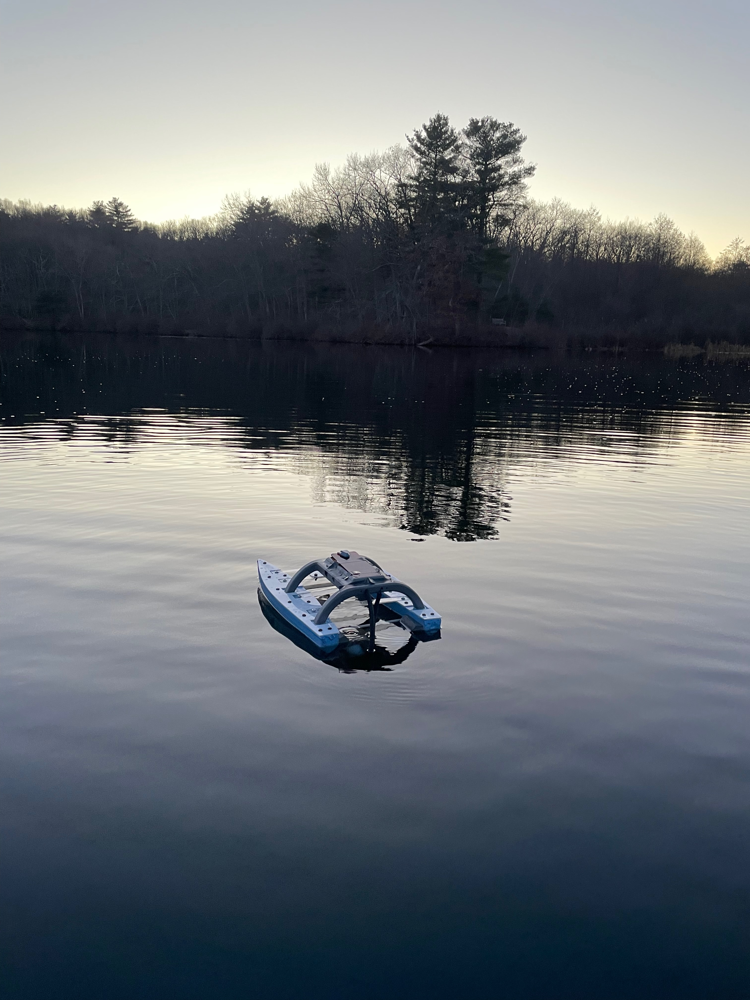
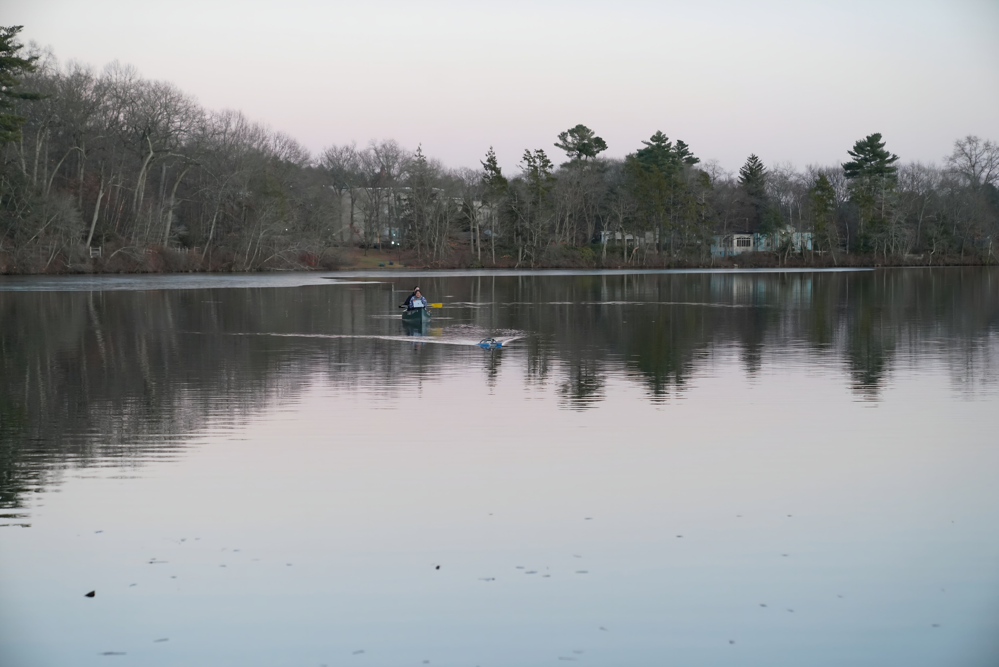
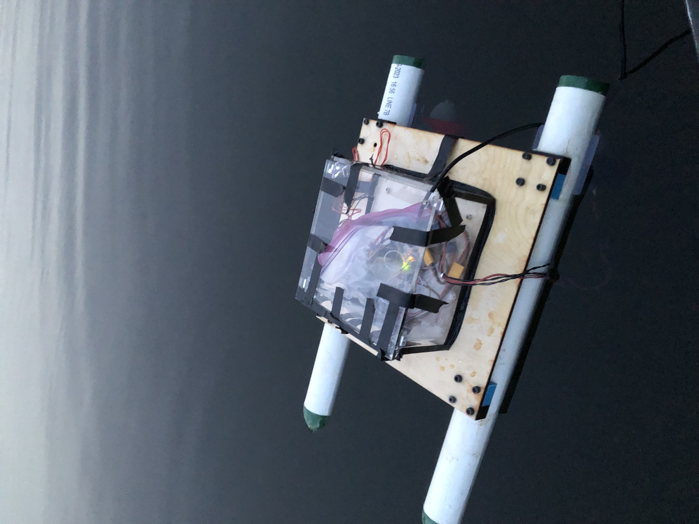
No Compass? No Problem.
Autonomous Surface Vehicle
The result? Simpler, more robust GPS-only system. Solved wind drift through iteration. Shipped on deadline. Sometimes Murphy's Law makes you build it better.
Product Development Strategy
- Scoped MVP: Since our compass arrived broken, we quickly pivoted to using only GPS-based waypoint navigation.
- Need Identified: reliable autonomous navigation despite environmental challenges
- Prioritized wind drift compensation after identifying it as primary failure mode
Iterative Roadmap
- V1 (MVP): Position-relative movement
- V2: Distance-based movement/li>
- V3 (Shipped): Dual-axis heading with ±45° tolerance
Technical Problem-Solving
- Eliminated compass dependency through innovative heading calculation
- Implemented real-time course correction to handle environmental drift
- Hands-on hardware troubleshooting
- Balanced responsiveness and computational load for optimized navigation
Product Management Learnings
- Demonstrated agile methodology: build, test, learn, iterate based on real data
- Validated assumptions through testing before building complex features
- Made data-driven decisions based on hardware accuracy and computational power
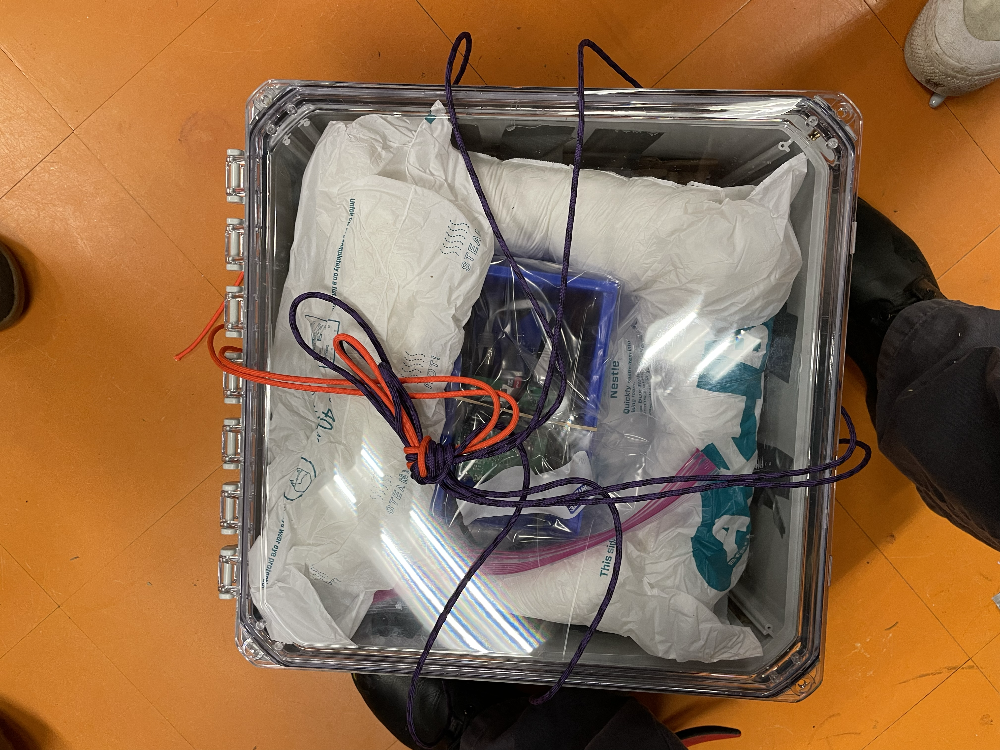
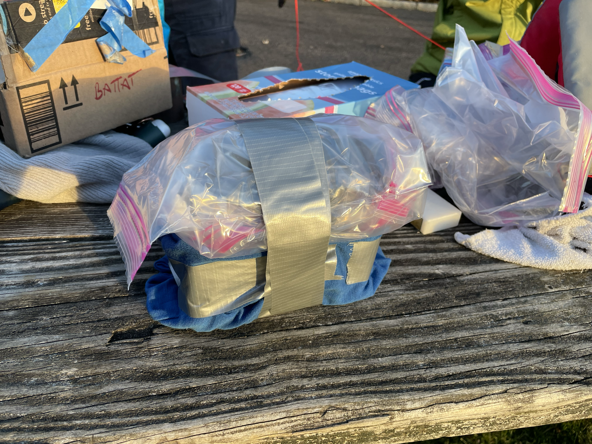
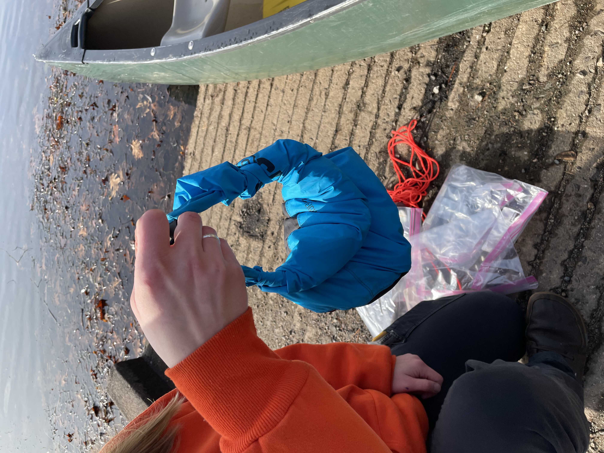
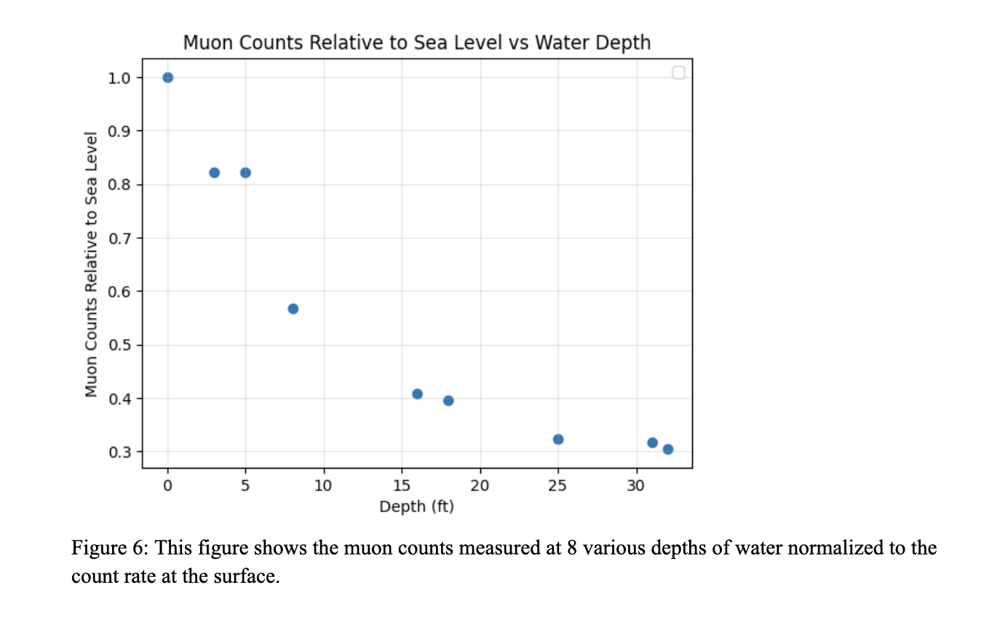
The Goldilocks Box
Underwater Muon Detection System
Built three boxes to solve it. First: buoyant IP68 housing that wouldn't sink. Second: lead-brick fortress that wouldn't come up. Third: lightweight dry bag with measured ballast. Found a solution to this Goldilocks engineering problem where constraints met.
Product Requirements
- Objective: Measure attenuation of muon flux at depths 0-10m in lake environment
- Constraints: Waterproof to 10m, lightweight enough for 2-person canoe deployment, <$500 budget
- User need: Simple deployment/retrieval process operable in cold weather conditions
Rapid Iteration Through Failure
- V1 (Failed): Large pressure-rated container (35.6 x 35.6 x 18.3 cm) with tile ballast - too buoyant to sink despite initial tests
- V2 (Failed): Added lead bricks (27kg total) - solved buoyancy but now too heavy to retrieve from canoe
- V3 (Shipped): Pivoted to lightweight dry bag and Ziplocks + 2.3kg aluminum/stone ballast
- Made kill-decision on sunk cost ($200+ housing investment) to deliver working product on timeline
Technical Problem-Solving
- Waterproofing: Implemented redundancy validated through testing (nested Ziploc bags + dry bag)
- Data optimization: Analyzed acceptance angle vs. count rate tradeoff, chose 2.5cm separation for 70% sky coverage
- Stability: Designed ballast block to prevent dry bag puncture and keep detector vertical
Data-Driven Decisions
- Measured 70% muon attenuation at 9.75m depth, demonstrating exponential decay pattern
- Root cause analysis: Experimental counts 55% lower than theoretical predictions, traced to wide acceptance angle (63.4°)
- Quantified error sources: timing error <0.16%, angle error ~1%, temperature effects negligible
Outcomes
- Delivered working underwater detector system within 6-week timeline and $500 budget
- Balanced competing constraints: waterproofing, weight, cost, safety, data quality, and timeline
Future Recommendations
- Increase detector separation to 8cm to reduce acceptance angle and improve data accuracy
- Add pressure sensor for automated trial timing and depth verification
PM Skills Demonstrated
- Requirements definition under conflicting constraints
- Rapid iteration and fail-fast mentality when designs didn't meet field conditions
- Risk mitigation through redundant systems (nested waterproofing, tether backup)
- Technical communication: Co-authored comprehensive research paper documenting methodology for future classes
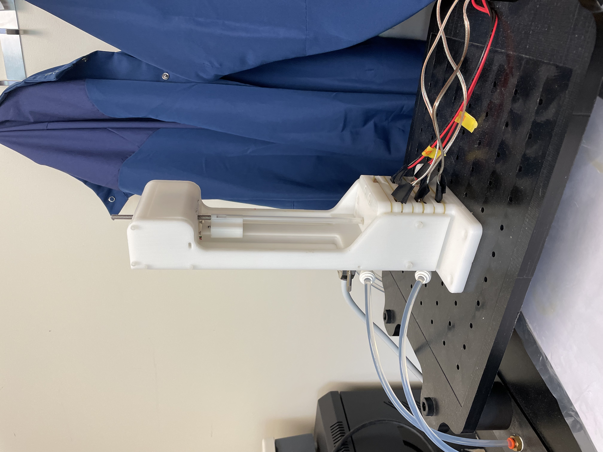
Startup Summer
Medical Device R&D Internship
Designed multiplexing experiments, coordinated complex schedules, analyzed error patterns, created 3D explainer video. Whatever the gap between lab results and investor understanding.
The Company
- Lodestone Biomedical: Early-stage medical device startup using magnetic nanoparticles for bio-system diagnostics
- Challenge: Prove multiplexing capability to detect multiple biomarkers simultaneously
- Startup stage: Pre-commercial, focused on proof-of-concept and investor validation
Cross-Functional Coordination
- Problem: Schedule in vivo mouse experiments with conflicting constraints across personnel, materials, and experimental timelines
- Stakeholder mapping: Coordinated schedules and technical needs across engineering team, research team, and external collaborators
- Outcome: Enabled efficient use of expensive nanoparticle samples and maximized team productivity
Multiplexing Proof-of-Concept Leadership
- Hypothesis: Device signal analysis could deconvolve mixed sample to determine individual concentrations
- Analysis: Created graphical visualizations of error in multiplexing model to identify systematic issues and validate findings
- Result: Achieved proof-of-concept by end of summer, validating core technology assumption for investors
Technical Communication
- Challenge: Explain complex magnetic nanoparticle technology to non-technical investor audience
- Solution: Self-taught Blender 3D animation software
- Deliverable: Created 1-minute animated explainer video for company website showing technology mechanism
- Impact: Provided critical investor communication tool for startup fundraising efforts
Product Management Skills Demonstrated
- Project planning
- Stakeholder management
- Technical execution
- Cross-functional communication
- Initiative
Business Value
- Delivered multiplexing proof-of-concept, validating key product capability for investors
- Optimized expensive experimental resources through effective scheduling
- Created reusable investor communication asset (animated video)
- Contributed to early-stage product development at critical validation phase